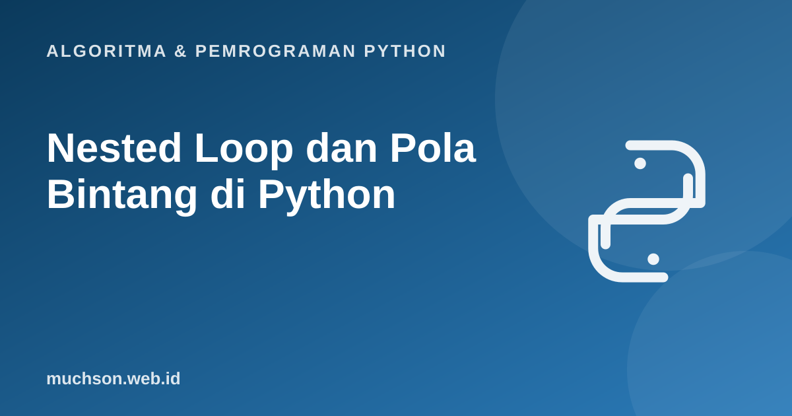

Beranda › Artikel › Algoritma & Pemrograman Python
Algoritma & Pemrograman PythonNested Loop dan Pola Bintang di Python
Soal pola bintang hampir pasti muncul di ujian praktikum algoritma. Bukan karena polanya penting, tetapi karena ia melatih satu keterampilan inti: memahami bagaimana perulangan di dalam perulangan bekerja dan bagaimana setiap baris, kolom, dan spasi dihitung. Kuasai pola berpikirnya, dan semua variasi akan mengikuti.
Sebaiknya sudah paham: perulangan for dan while

Setelah membaca dan mencoba materi ini, Anda mampu:
- menjelaskan urutan eksekusi perulangan bersarang
- membangun pola dengan menghitung jumlah spasi dan simbol per baris
- membuat tabel perkalian dan pola angka
- menghitung jumlah eksekusi badan perulangan dan mengaitkannya dengan O(n²)
Cara kerja: perulangan dalam selesai penuh dulu
Pada for i ...: for j ...:, untuk setiap nilai i perulangan dalam j berjalan dari awal sampai habis. Coba animasi berikut sampai urutan kunjungan sel (i, j) terasa natural.
Pola 1: segitiga siku-siku
n = 5
for i in range(1, n + 1):
print("*" * i)*
**
***
****
*****
Versi dengan perulangan bersarang eksplisit (yang biasanya diminta dosen):
n = 5
for i in range(1, n + 1): # baris
for j in range(i): # kolom: i kali
print("*", end="")
print() # pindah baris*
**
***
****
*****
Pola 2: segitiga terbalik dan rata kanan
n = 5
for i in range(n, 0, -1):
print("*" * i)
print()
for i in range(1, n + 1):
print(" " * (n - i) + "*" * i)*****
****
***
**
*
*
**
***
****
*****
Pola 3: piramida
Rumus per baris i (mulai 1) dari n baris: spasi = n - i, bintang = 2i - 1.
| Baris i | Spasi (n - i) | Bintang (2i - 1) |
|---|---|---|
| 1 | 4 | 1 |
| 2 | 3 | 3 |
| 3 | 2 | 5 |
| 4 | 1 | 7 |
| 5 | 0 | 9 |
n = 5
for i in range(1, n + 1):
print(" " * (n - i) + "*" * (2 * i - 1)) *
***
*****
*******
*********
Pola 4: belah ketupat
n = 4
for i in range(1, n + 1): # bagian atas
print(" " * (n - i) + "*" * (2 * i - 1))
for i in range(n - 1, 0, -1): # bagian bawah
print(" " * (n - i) + "*" * (2 * i - 1)) *
***
*****
*******
*****
***
*
Pola angka dan tabel perkalian
for i in range(1, 6):
for j in range(1, i + 1):
print(j, end=" ")
print()
print()
for i in range(1, 6):
for j in range(1, 6):
print(f"{i * j:3d}", end="")
print()1
1 2
1 2 3
1 2 3 4
1 2 3 4 5
1 2 3 4 5
2 4 6 8 10
3 6 9 12 15
4 8 12 16 20
5 10 15 20 25
Berapa langkah? Hubungannya dengan O(n²)
Pada dua perulangan bersarang yang masing-masing n kali, badan terdalam dijalankan n × n kali. Pada pola segitiga, jumlahnya 1 + 2 + ... + n = n(n+1)/2, yang tetap tumbuh seperti n². Itu sebabnya algoritma dengan dua perulangan bersarang disebut berkompleksitas kuadrat.
def hitung(n):
c = 0
for i in range(1, n + 1):
for j in range(i):
c += 1
return c
for n in [5, 10, 100]:
print(n, hitung(n), n * (n + 1) // 2)5 15 15
10 55 55
100 5050 5050
Bila n digandakan, jumlah langkah menjadi sekitar empat kali lipat. Itu alasan nested loop pada data besar harus dipertimbangkan matang-matang.
1. Buat pola berikut untuk n = 4: baris ke-i berisi bilangan i yang diulang i kali (1 / 22 / 333 / 4444).
for i in range(1, 5):
print(str(i) * i)2. Buat pola papan catur 4×4 dengan "#" dan ".", bergantian.
for i in range(4):
print("".join("#" if (i + j) % 2 == 0 else "." for j in range(4)))3. Buat segitiga Pascal 5 baris. Petunjuk: tiap angka adalah jumlah dua angka di atasnya.
baris = [1]
for _ in range(5):
print(baris)
baris = [1] + [baris[k] + baris[k+1] for k in range(len(baris) - 1)] + [1].4. Berapa kali "*" dicetak oleh belah ketupat n = 4 di atas?
- Perulangan dalam selesai penuh untuk setiap nilai perulangan luar.
- Pola: tentukan jumlah spasi dan simbol per baris sebagai rumus dari i dan n.
- print() kosong memindahkan baris setelah satu baris pola selesai.
- Dua perulangan bersarang menghasilkan n² langkah, tumbuh seperti kuadrat.
Tanya jawab
Bolehkah memakai perkalian string alih-alih perulangan dalam?
Bagaimana cara berlatih pola?
Apa itu nested loop tiga tingkat?
Referensi
- Allen B. Downey, Think Python (edisi ke-3), buku teks terbuka
- MIT OpenCourseWare 6.0001: Introduction to Computer Science and Programming in Python
- Dokumentasi Python: Built-in Types, Sequence Types (perkalian string)
- Anany Levitin, Introduction to the Design and Analysis of Algorithms, bab analisis perulangan bersarang